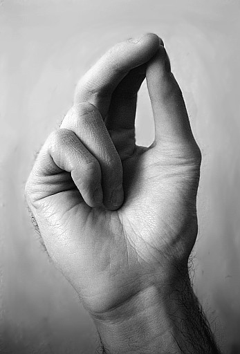
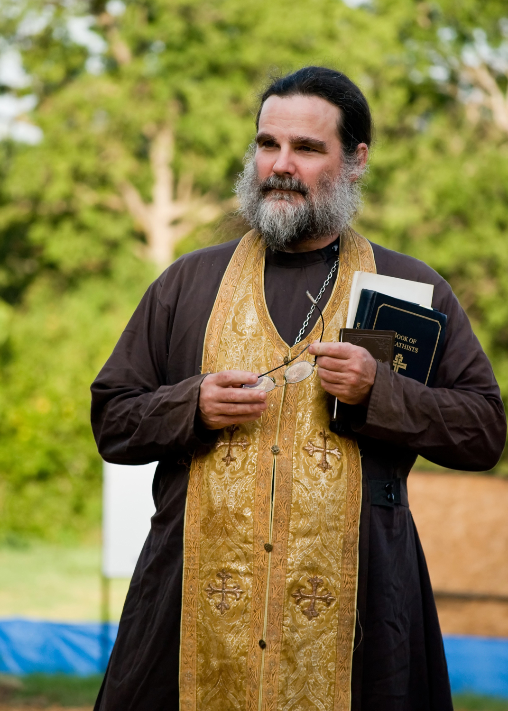
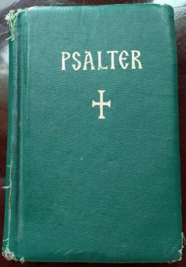
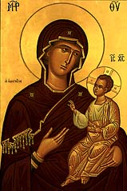
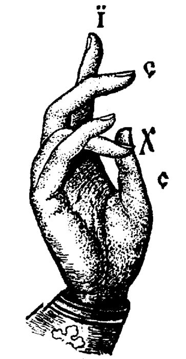

BEG Questions
Tuesday, 7/19/2016
Questions about: How a priest blesses, The sign of the cross, fringe on the priest’s vestment, prostrations, Jesus prayer, prostrations on Sunday, common services, Psalter, stars in icons of the Theotokos.
A “BEG” is, basically, a scavenger hunt in the woods. This Russian word literally means “run”. The trail the campers will follow is littered with various objects that are visible from the trail, although they are somewhat hidden. The campers must traverse the trail, and find as many objects as possible. They do not disturb the objects, but write down their name. For instance, they might find a red stocking cap hanging from a tree limb, or a chess piece under a log.
There are also several stations where crazy stuff happens, and they must do something for points. For instance, in today’s BEG, there were two “kitchen ladies”, Baba Masha AND Baba Masha, dressed to look a lot like “Matroushka” dolls, who told the campers to fish marbles out of a muddy soup with a spoon. They earned a point for each marble they found. These ladies were not very tidy, as they continually spilled this soup over every camper!
At the station for the clergy, it was much more sedate. This was another opportunity for the clergy to try to get a little religion into the hearts and minds of the campers. The general way is to ask a series of questions, which, if correctly answered, will give the campers ten points.
The following are the questions Priest Seraphim and Priest Leonty asked the campers. We have included the answers at the bottom, when applicable, along with a little bit of an explanation. We got in trouble for explaining things too much (and taking too long at our station), but after all, fish gotta swim, and birds gotta fly, and pastors gotta teach.
Try to answer the questions. How many points did you get?
QUESTIONS
When the priest blesses, he holds the fingers of his right hand a certain way, to spell out 4 letters, as an acronym. What do these letters represent? (note: the picture below is for question 2)
W 
What is
the theological meaning of this?
W 
Say the Jesus prayer, in any common form, in Russian or English.
Name
three services, other than Divine Liturgy.

How
many
psalms are in the Psalter?
Demonstrate a prostration.
What is the meaning of, when we make the sign of the cross over ourselves, touching (in order) with the tips of the first three fingers of the right hand, the forehead, then tracing a vertical line down to the stomach (belly), then touching in turn, the right shoulder then the left?
Why
do we normally not do any prostrations on Sunday?
O 
ANSWERS

Illustration
1: Priest's hand blessing
The
priest’s fingers spell out the first and last letters of the
name “Jesus Christ” (IHCOYC)
(XPICTOC).
We read the acronym starting from the index finger. It
is easiest to envision the letters if we are looking at the back of
the hand and reading left to right.
The index finger
looks like “iota” (I). The ring finger is bent to look
like “C”. The thumb and 4th
finger form an “X”. The little finger is also bent to
look like a “C”
It is by the name of Jesus
that we are saved and receive blessings: “At
the name of Jesus every knee should bow, of things in heaven, and
things in earth, and things under the earth;” (Phil
2:10).
2.
When a person crosses themselves, their thumb and first two fingers
together represent the Holy Trinity, which consists of three persons
or “hypostases” – “Father, Son and Holy
Spirit”, but one God, indicated by the tips touching. The two
fingers folded into the palm represent the two natures of Jesus
Christ the Son of God, Who always was perfect God, and in time,
through the virgin birth of the Virgin Mary, became perfect man, so
that after the incarnation, Jesus Christ has two separate natures,
which are in one person, but not mixed together. He is “perfect
God and perfect man”.
Why is this important? God is
unknowable, except those to whom He reveals Himself, but grace. He
has revealed Himself to us as He is, and this is a Trinity of
Hypostases, one in essence and indivisible. The whole basis of the
Christian faith is by God’s revelation. Our whole life, we are
learning to love as God loves, and ONLY in this way, we obtain the
only important thing in life, knowledge of, and union with God, the
Holy Trinity.
The
fringe at the bottom of the epatrachiel represents the souls that
the priest cares for and bears in his heart at all times.
He
wears this vestment over his head, and resting on his neck. This is
the only essential vestment the priest uses for all services.
Although the cloth is very light, it is also very “heavy”,
because a priest is helping bear the burdens of others, by empathy,
prayer, counsel, and whatever else is necessary for the shepherd to
do in order to care for the sheep.
Any good priest will bear
his flock and all those he helps or encounters in any significant
way in his heart, will love them, and pray for them daily. Remember
this when you have problems, and join your prayer to that of your
priest.
Lord
Jesus Christ, (Son of God), have mercy on me (a sinner)*.
*
- (Words in parentheses may be omitted)
We can also modify
this prayer to pray for someone. If we want to pray for Joseph we
can say: “Lord Jesus Christ, (Son of God), have mercy on
Joseph”.
The common prayer “Lord have mercy”,
is related to the Jesus prayer. The Jesus prayer should be said as
often as possible, so that we try to fulfil the command of St Paul,
“pray without ceasing” (1
Thessalonians 5:17)
It
is foolish, although, unfortunately, common, to consider this prayer
to be only for monks. All are called to pray, and we must have
simple prayers to pray from our heart, or else we become tired. Many
use a prayer rope (“Chotki”) to help them with this
prayer.
The roots of the prayer are found in the Gospel,
such as when the 2 blind men cried out to Jesus to be healed: “And
when Jesus departed thence, two blind men followed him, crying, and
saying, Thou
Son of David, have mercy on us.”
(Mat
9:27)
There
is also another account, about one blind man, which is even more
“exact”:
“And they came to Jericho: and as
he went out of Jericho with his disciples and a great number of
people, blind Bartimaeus, the son of Timaeus, sat by the highway
side begging. (47)
And when he heard that it was Jesus of Nazareth, he began to cry
out, and say, Jesus,
thou
Son of David, have mercy on me.
(48)
And many charged him that he should hold his peace: but he cried
the more a great deal, Thou
Son of David, have mercy on me.”
Mark 10:46-48
Midnight Office, Matins, 1st, 3rd, 6th, 9th hour, Vespers, Compline, Moleben, Panikhida. Also accepted: Crowning, baptism, etc.
To
know how many psalms are in the psalter, one presumes it is known
what the psalter is, and who wrote over half of the psalms! Of
course, the Psalms were written mostly by David, the Prophet and
King. David was also a progenitor of Christ (one of the titles of
Jesus is “Son of David”, because He is descended from
David, who was of the tribe of Judah, hence Jesus is also called the
“lion of Judah”).
The campers had a little
trouble with identifying David, as Priest Seraphim asked them who
the majority author was, and then, when they hesitated, told them
that he was the prophet and king “Ralph”, and most were
too confused to know that he was pulling their leg. We must know
about things that are precious – even small details –
because these details are know from our constant familiarity with
them. If a person loves “Seinfeld”, he would know every
character in the show, and many of the show plots. The things we are
familiar with reveal the things we love.
The psalms are an
Old Testament book, and are poetic prayers that cover a wide range
of topics. Some are about repentance, and many describe Jesus Christ
in some way (these are termed “Messianic psalms”,
because they describe the “Messiah” (Savior) in some
way). Other psalms are more historical, or full of praises to God,
or supplications. There is basically nothing in life that the psalms
cannot educate us about.
There are 150
Psalms. The shortest is 2 verses, the longest 176 verses. They are
arranged in the liturgical book called the “Psalter”, in
20 chapters, which are called “kathismas”. This Greek
word means “sitting”, because when a kathisma is chanted
in church, the people sit down. Each kathisma is divided into 3
parts, called a “stasis” (another Greek word, pronounced
“stah-cease) each with 1 or more whole psalms in it.
The
daily services of the church (usually read in Monasteries) chant the
entire psalter in a week. It is incredibly helpful to the soul to
regularly chant the psalms at home. The divisions of the Psalter
make it quite easy. It would talk only a few minutes to chant a
single stasis of the Psalter.
Demonstrate a prostration. The basics of the movement are to make the sign of the cross, while simultaneously getting to one’s knees and touching the forehead on the floor, then immediately standing back up. We are in a penitent mood when we prostrate.
We
ask the Lord to bless our mind, our life and our deeds.
The
mind is represented by touching the forehead.
Our life is
represented by touching our belly (the belly sustains life by
digesting food, and in Russian, the word for stomach - “Zivot”
- means life in Slavonic, which is used in church services –
it is a kind of “old Russian”). Some say that we are
actually asking the Lord to bless our “soul”, and that
is also correct, because the word “soul” also means
life!
Our deeds are accomplished primarily with our hands,
so we touch our shoulders, upon which are attached our arms and
hands.
The
simple answer for why we do not do prostrations on Sunday is because
on every Sunday, we celebrate the resurrection of Jesus Christ from
the dead, since on the first Pascha (some call it Easter), He rose
on a Sunday. This is not enough of an answer, because it does not
explain the inner meaning. We
should understand the inner meaning of things, and not just recite
random facts by rote.
Because
of the resurrection, sin and death has been defeated. In heaven,
there is no death, and no “sickness, or sighing”, but
only “life everlasting”. There is also no sin, because
we have become perfected, and since there is no sin, there is no
need for repentance. A prostration is primarily an expression of
repentance, therefore, we do not do them on Sunday, because of our
looking forward to the resurrection and the joy we will have in
eternity.
We also mostly stand in the church on any day
(except in the unfortunate circumstance when people are conditioned
to sit passively because of the presence of pews), because we
remember the resurrection, and our standing mimics a man risen from
the dead.
The
three stars on icons of the Theotokos all represent the
Ever-Virginity of Mary. The scripture teaches this dogma, openly and
secretly.
The Theotokos was a virgin before giving birth,
during her birth-giving, and after giving birth.
The Gospel
of Luke makes it very clear that she was a virgin when, by the Holy
Spirit, she conceived Jesus:
“And in the sixth month
the angel Gabriel was sent from God unto a city of Galilee, named
Nazareth, (27)
To
a virgin
espoused to a man whose name was Joseph, of the house of David; and
the virgin's name was
Mary. (28)
And the angel came in unto her, and said, Hail, thou
that art
highly favoured, the Lord is
with thee: blessed art
thou among women. (29)
And when she saw him,
she was troubled at his saying, and cast in her mind what manner of
salutation this should be. (30)
And the angel said unto her, Fear not, Mary: for thou hast found
favour with God. (31)
And, behold, thou shalt conceive in thy womb, and bring forth a
son, and shalt call his name JESUS. (32)
He shall be great, and shall be called the Son of the Highest: and
the Lord God shall give unto him the throne of his father David:
(33)
And he shall reign over the house of Jacob for ever; and of his
kingdom there shall be no end. (34)
Then
said Mary unto the angel, How shall this be, seeing I know not a
man?
(35)
And the angel answered and said unto her, The
Holy Ghost shall come upon thee, and the power of the Highest shall
overshadow thee:
therefore also that holy thing which shall be born of thee shall be
called the Son of God.” Luke 1:26-35
A prophesy of
Ezekiel, has always been understood by the church (well before there
were any “Protestants”, and even before the separation
of Rome and the Orthodox church (in 1052)) in a mystical way, to
refer to her virginity during and after giving birth:
“Then
he brought me back by the way of the outer gate of the sanctuary
that looks eastward; and it was shut. (2)
And the Lord said to me, This
gate shall be shut, it shall not be opened, and no one shall pass
through it; for the Lord God of Israel shall enter by it, and it
shall be shut. (3)
For the prince, he shall sit in it, to eat bread before the Lord;
he shall go in by the way of the porch of the gate, and shall go
forth by the way of the same. (4)
And he brought me in by the way of the gate that looks northward, in
front of the house: and I looked, and, behold, the house was full of
the glory of the Lord: and I fell upon my face.” Ezekiel
44:1-4
We know some things about Joseph, by Holy Tradition.
Joseph was a widower, and was 85 years old when he was called upon
to protect the Theotokos, by being betrothed to her. He had
children: James (whom the church calls “brother of the Lord”
– he was the first bishop of Jerusalem, and one of the
“Seventy” Apostles), Jude (who was one of the twelve
apostles), Symeon, and Salome (who married Zebedee and was the
mother of James and John, who were of the 12 apostles). The word
rendered “brother” in Semitic usage also encompasses
“cousin”, and these children of Joseph were therefore
cousins of Jesus, although not by blood of course, because Joseph
was not the physical father of Jesus, only His protector during His
growing up years.
It is very significant to believe in the
dogma of the ever-virginity of Mary. This was always taught by the
church, although not written down for a long time. We reason that if
the Theotokos actually contained God in her womb for 9 months, she
would be completely changed, and not care about mundane or earthly
things. This dogma can only be understood by exposure to our hymns
and God enlightening the soul.
This document is at:
Page